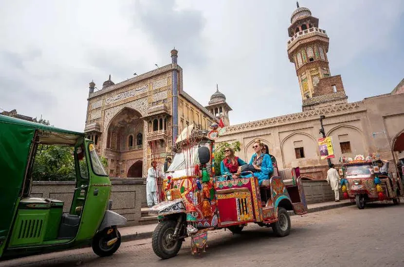

A tonga ride or a colourful Rangeela Rickshaw can add a memorable local perspective to a Lahore visit. These experiences are best planned as part of a broader heritage outing, with clear expectations about the route, duration, price and stopping points. Availability and permitted routes can change, so confirm arrangements with your tour provider before the day.
What makes the experience different
A traditional tonga offers a slower, old-fashioned way to experience selected streets, while a Rangeela Rickshaw brings bright decoration and a lively local character to a short sightseeing ride. Neither replaces walking through heritage sites, where narrow lanes and historic buildings are best appreciated at a relaxed pace.
Pair the ride with Lahore heritage
Consider combining a ride with a guided visit around the Walled City, selected gates or nearby cultural landmarks. Some streets may be pedestrian-only or unsuitable for vehicles at particular times, so the route should respect local rules and crowd conditions.
Agree on the details first
Before setting off, confirm the price, duration, route, number of passengers, waiting time and whether photography stops are included. Ask about the meeting point and how the ride will end. Do not assume every landmark can be reached directly by vehicle.
Respect people, animals and local life
For a tonga ride, look for signs that the animal is handled responsibly, has access to water and is not visibly distressed or overloaded. Avoid experiences that appear unsafe or cruel. For any ride, follow local traffic guidance and avoid blocking busy streets for photographs.
Photography tips
Early morning or late afternoon light can be pleasant for street photography, but conditions depend on weather and access. Ask permission before photographing residents, shopkeepers or children. Be mindful of religious spaces and any restrictions on photography.
What to wear and bring
Choose comfortable footwear for walking between stops, carry water and sun protection, and keep bags secure in crowded areas. Lahore can be hot, and the Walled City includes uneven surfaces and busy lanes.
Suggested half-day plan
Begin with a guided walk through a heritage area, take a pre-arranged short ride where permitted, pause for a local snack, then continue on foot to a nearby landmark. Leave time for traffic, crowds and any site-specific visiting requirements.
Make it part of a tailor-made tour
Share your interests, group size, mobility needs and preferred pace with Past Enlighten. Ask the operator to confirm current availability, route permissions, pricing and animal-welfare practices before booking.
Plan your Pakistan trip
Tell Past Enlighten your dates, group size, preferred pace and interests. Confirm current route access, inclusions and prices before finalising your plan.
Ask Past EnlightenTravel conditions, opening arrangements and prices can change. Verify current local information before departure.